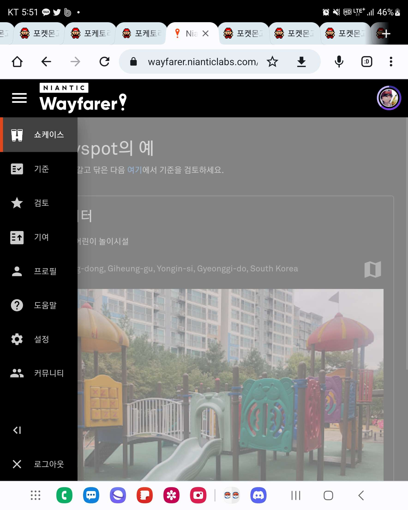
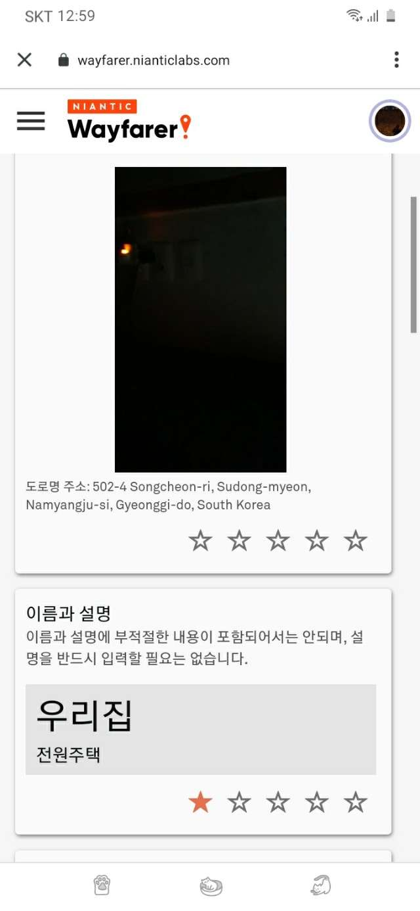

정식 명칭: Niantic Wayfarer
이 사이트는 다른 플레이어 들이 제출한 후보를 심사하는 사이트입니다.
Q: 왜 제가 심사를 해야하나요?
심사를 하면 "업그레이드"라는 기회가 주어지고
자신이 신청한 후보에 적용하면 더 빠르게 심사를 받을 수 있습니다.
(필자가 신청한 스탑 중 업그레이드 사용하지 않고 1년 후 결과가 나온 후보가 몇개 있습니다.)
+ 포켓몬고 내에 심사 관련 매달도 존재합니다.

"기준" 탭에서 후보를 신청하기 전 기준들을 확인할 수 있습니다. 꼭 확인하세요!
ex): 우리 학교에 스탑 세울래요!: 대학교 제외하고는 학교 부지에 스탑 신청 금지입니다.
"검토"탭에서는 후보들을 심사합니다.
처음 이 사이트에 접속하시는 분들은 테스트를 통과하셔야 합니다.
"기여"탭에서는 자신이 신청한 후보들을 확인하고 수정하고 업그레이드를 사용할 수 있습니다.
포켓스탑을 신청할 때는 장난식으로 신청하는 것은 금물입니다.
포켓몬고 뿐만 아니라 나이언틱의 다른 게임 플레이어들도 후보를 심사하고 있기 때문입니다.
"포켓몬 관련이기 때문에 이거 승인시켜주세요" 라는 의도로 신청한 후보 같은 경우는
다른 심사자에게 민폐가 될 수 있기 때문에 주의!
어질어질한 후보들 리스트

이렇게 장난질하는 사람들이 좀 있기도 합니다.
필자의 의견을 더하자면
"사진이 중요하다고 생각합니다."
유적지 임에도 울타리가 후보를 가려서 거부,
차량 번호판 때문에 거부
화질이 낮은 사진이라 거부 등등
사진을 찍을 때 각도를 신경 써서 촬영하여 업로드 하는 것이 중요하다고 생각합니다.
예전 영상이라 테스트 내용이 달려져 있을 수 있지만,
테스트를 어려워 하시는 분들을 위해 참고용으로 영상 공유해드립니다.
스탑 심사, 뽀박사 뽀쪽 유튜브